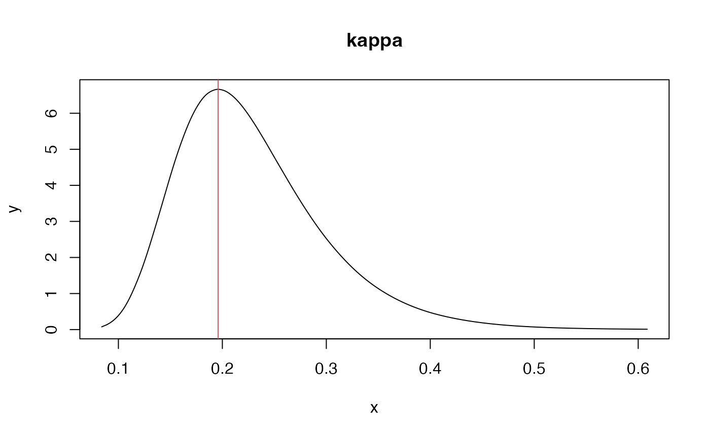
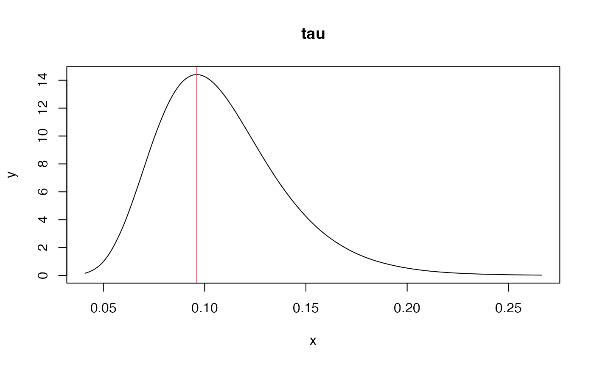
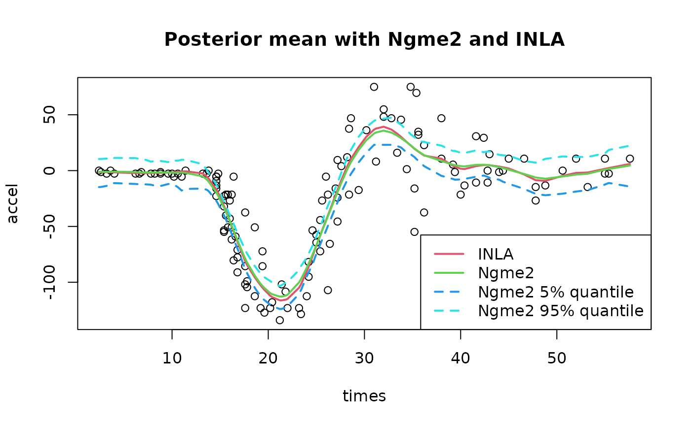
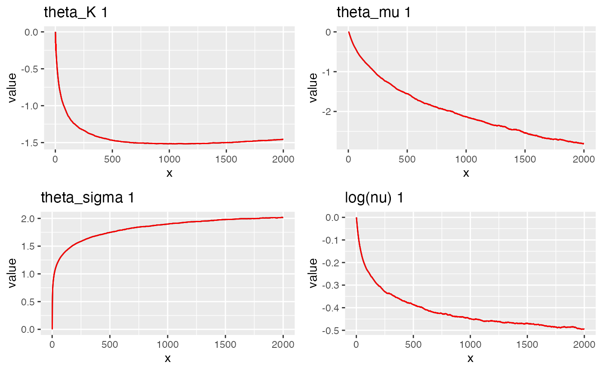
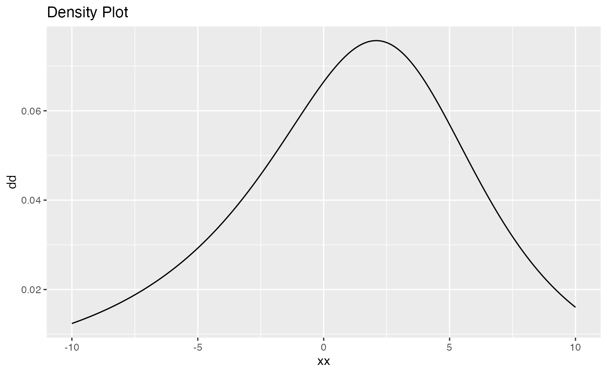
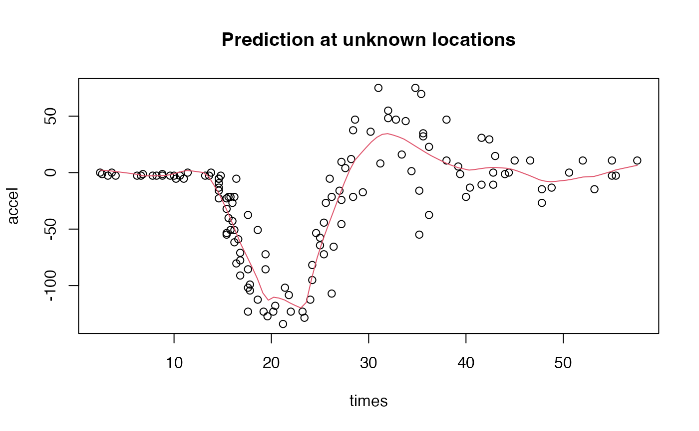

Comparing Ngme2 with R-INLA
inla_compare.RmdDescription
R-INLA (https://www.r-inla.org) is a package in R that do approximate Bayesian inference for Latent Gaussian Models. Ngme2 follows similar structure but we allow non-Gaussian latent models (Latent non-Gaussian Models). In this vignette, we will introduce the basic usage of Ngme2 package and compare it with R-INLA.
Load data and create mesh
In this example, we will use the mcycle data, which is a data set of motorcycle acceleration times. The data set is available in the MASS package.
set.seed(16)
library(MASS)
library(INLA)
library(ngme2)
data(mcycle)
str(mcycle)
#> 'data.frame': 133 obs. of 2 variables:
#> $ times: num 2.4 2.6 3.2 3.6 4 6.2 6.6 6.8 7.8 8.2 ...
#> $ accel: num 0 -1.3 -2.7 0 -2.7 -2.7 -2.7 -1.3 -2.7 -2.7 ...
with(mcycle, {plot(times, accel)})Next we will create the mesh, in order to use the SPDE model. The
mesh is created by the function inla.mesh.1d. The first
argument is the location of the mesh points. The second argument is the
maximum edge length.
mesh <- inla.mesh.1d(mcycle$times, max.edge=c(1, 10))
mesh$n
#> [1] 94Compare results in INLA and Ngme2
Fit the model with INLA
# fit use INLA
spde <- inla.spde2.matern(mesh, alpha=2)
A <- inla.spde.make.A(mesh, loc=mcycle$times)
ind <- inla.spde.make.index("time", spde$n.spde)
data <- list(accel = mcycle$accel, time = ind$time)
result_inla <- inla(
accel ~ -1 + f(time, model=spde),
data = data,
control.predictor = list(A = A),
control.compute = list(config=TRUE)
)Let’s check the estimation of SPDE model parameters
spde_res <- inla.spde.result(result_inla, "time", spde)
# posterior mode of kappa
post_mode_kappa <- with(spde_res$marginals.kappa,
kappa.1[which.max(kappa.1[, 2]), 1])
plot(spde_res$marginals.kappa$kappa.1,
type="l", main="kappa")
abline(v=post_mode_kappa, col=2)
post_mode_kappa
#> x
#> 0.1994212
# posterior mode of tau
post_mode_tau <- with(spde_res$marginals.tau,
tau.1[which.max(tau.1[, 2]), 1])
plot(spde_res$marginals.tau$tau.1, type="l", main="tau")
abline(v=post_mode_tau, col=2)
1 / post_mode_tau # for comparison with Ngme2 (same as sigma parameter in Ngme2)
#> x
#> 10.20411Fit 1d SPDE model with Ngme2
Next we do similar thing with Ngme2.
spde_ngme <- model_matern(alpha=2, mesh = mesh, loc = mcycle$times)
result_ngme <- ngme(
accel ~ -1 + f(model = spde_ngme, name="myspde"),
data = mcycle,
family = "normal",
control = ngme_control(
iterations = 1000
)
)
#> Starting estimation...
#> Estimation done!
result_ngme
#> *** Ngme object ***
#>
#> Fixed effects:
#> No fixed effects
#>
#> Measurement noise:
#> Noise type - normal
#> Noise parameters:
#> sigma = 23.3
#>
#>
#> Latent models:
#> $myspde
#> Ngme model: matern
#> Model parameters:
#> kappa = 0.239
#>
#> Noise type - normal
#> Noise parameters:
#> sigma = 7.71Here, we can directly read the estimation of kappa and sigma (1/tau) as shown in the result.
Compare the results
with(mcycle, {plot(times, accel)})
lines(mesh$loc, result_inla$summary.random$time[, "mean"], col=2, lwd=2)
postW <- predict(result_ngme, loc=list(myspde = mesh$loc))
lines(mesh$loc, postW, col=3, lwd=2)
title("Posterior mean with Ngme2 and INLA")
# One can add some quantile band to the plot using Ngme2
postW_q25 <- predict(result_ngme, loc=list(myspde = mesh$loc), estimator="quantile", q=0.25)
postW_q75 <- predict(result_ngme, loc=list(myspde = mesh$loc), estimator="quantile", q=0.75)
lines(mesh$loc, postW_q25, col=4, lwd=2, lty=2)
lines(mesh$loc, postW_q75, col=5, lwd=2, lty=2)
legend("bottomright", legend=c("INLA", "Ngme2", "Ngme2 25%", "Ngme2 75%"), col=c(2, 3, 4, 5), lwd=2, lty=c(1, 1, 2, 2))
Extend model to non-Gaussian case
The Ngme2 package allows us to fit non-Gaussian latent models. We can
easily extend the model to non-Gaussian case by changing the
noise argument, and we can start from previous result using
start argument.
# refit the model using nig noise
result_ngme2 <- ngme(
accel ~ 0 + f(model = spde_ngme, name="myspde", noise=noise_nig()),
data = mcycle,
family = "normal",
control = ngme_control(
n_parallel_chain = 4,
iterations = 2000
),
start = result_ngme
)
#> Starting estimation...
#> Estimation done!
result_ngme2
#> *** Ngme object ***
#>
#> Fixed effects:
#> No fixed effects
#>
#> Measurement noise:
#> Noise type - normal
#> Noise parameters:
#> sigma = 24.1
#>
#>
#> Latent models:
#> $myspde
#> Ngme model: matern
#> Model parameters:
#> kappa = 0.282
#>
#> Noise type - nig
#> Noise parameters:
#> mu = -2.13
#> sigma = 12.9
#> nu = 0.198
traceplot(result_ngme2, "myspde")
plot(result_ngme2$latents[["myspde"]]$noise)
Doing prediction with Ngme2
Doing prediction at unknown location in INLA would require much more effort, we will skip it (since it’s not the main focus). While in Ngme2, it can be done in just one line of code.
First we need to create a new mesh for prediction.
Next, we call the predict function with loc
argument provided with a list of new locations (for each latent
model).
# similar to the posterior mean in previous section
prd_ngme <- predict(result_ngme2, loc = list(myspde=locs))
with(mcycle, {plot(times, accel)})
lines(locs, prd_ngme, col=2)
title("Prediction at unknown locations")